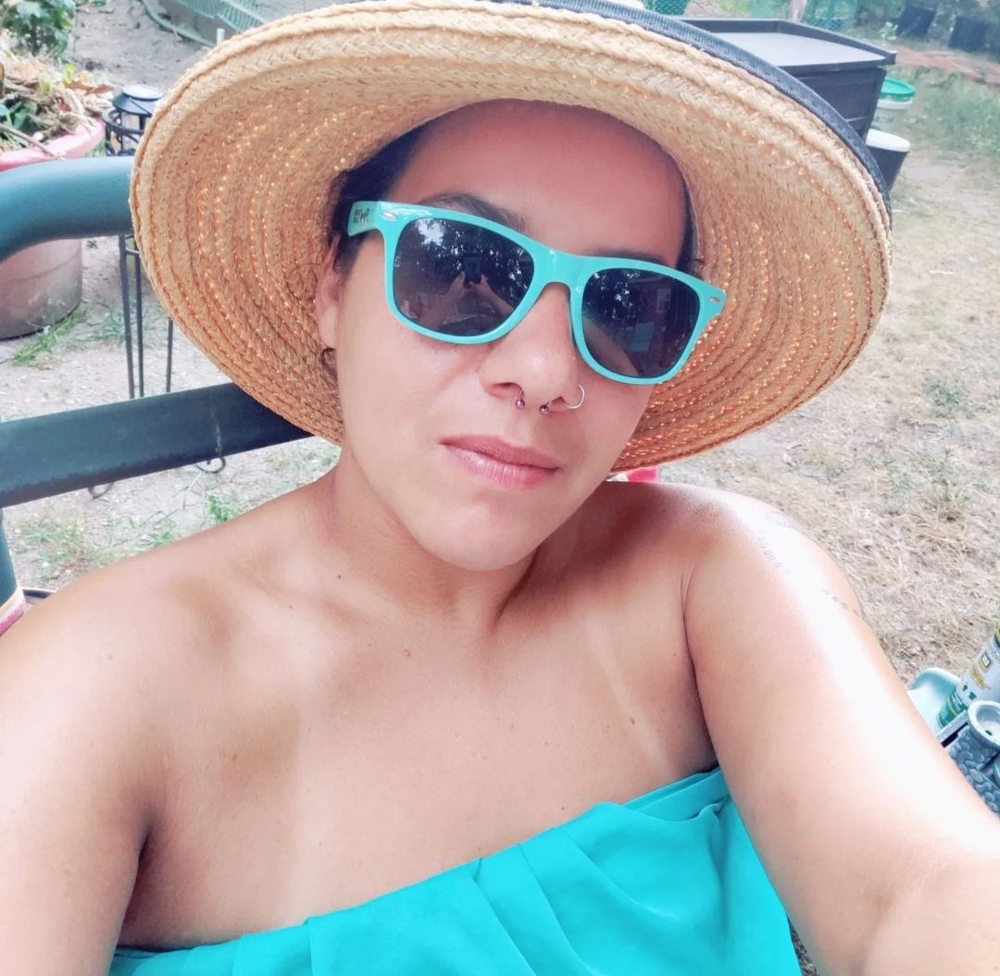
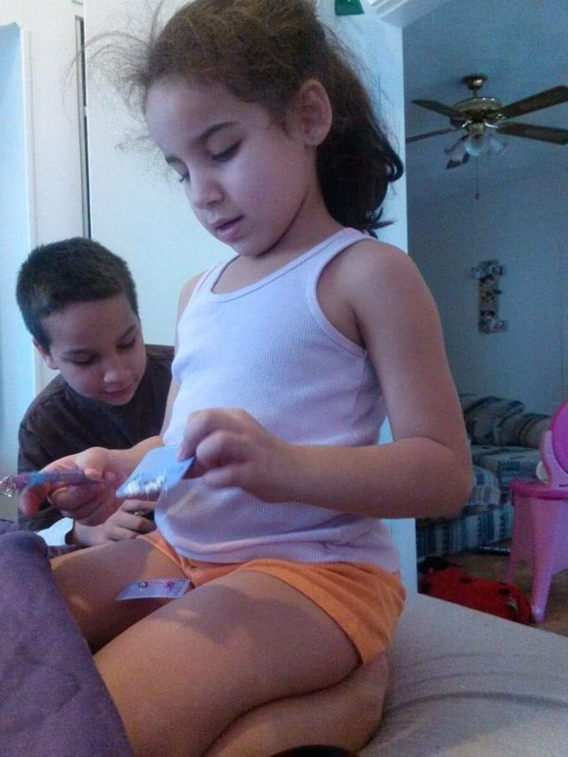

About Latoya
 I have arrived at a point in my journey where the only thing I am seeking is peace. Everyday, every action that I take is lead by a very strong desire to have more quiet and peaceful moments than chaos and noise. I am an avid hiker and enjoy the yoga classes. My current profession is a Chef. I find it to be too chaotic and rough on my body so I have chosen to go back to school so that I can find a job that allows me to rest my body more than being active. It's only fun to be active now when it's something that brings me health benefits.
I have two children. My son is 18 and works at Electric Boat and my daughter is 17. She is very athletic playing volleyball and basketball. Being a parent working full time and attending school full time is probably the most chaotic thing ever, but I see an end goal here so it keeps me going.
Education
- Mount Hope High School
- Community College of RI
- Johnson and Wales University

Hobbies
- Hiking
- Tarot and Metaphysical Studies
- Difficult Baking Projects